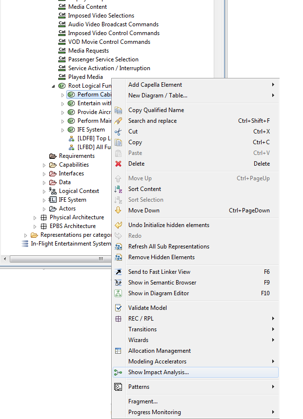
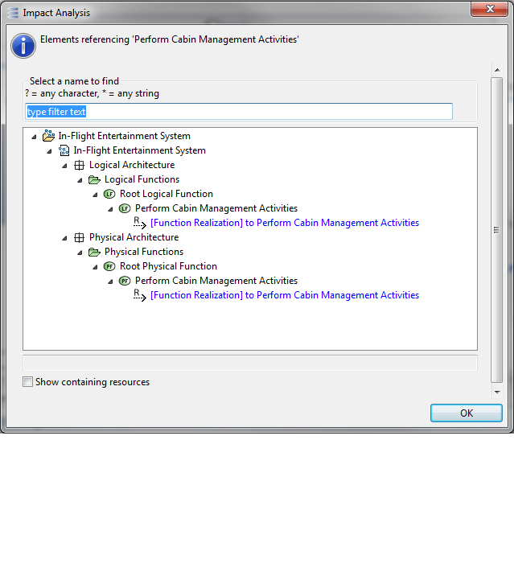

This tool is going to be integrally refactored in one of the next version of Capella
|
|
This tool is going to be integrally refactored in one of the next version of Capella |
It is possible to perform an impact analysis on any Capella element, using the contextual menu. The result of this impact analysis shows in blue all the elements having a direct relationship with the current element. The following is an example on a Logical Function. It shows for example which Physical Function is related and which is the Logical Component on which the function is allocated.


When activating the “Show containing resources” check box, the elements are sorted according to the actual file they belong to. This is useful when working a fragmented model, in configuration management for example.
An impact analysis is also available on the Delete confirmation dialog. The left pane shows the elements that are going to be deleted. The right pane shows the references and is contextual to the selection in the left pane.